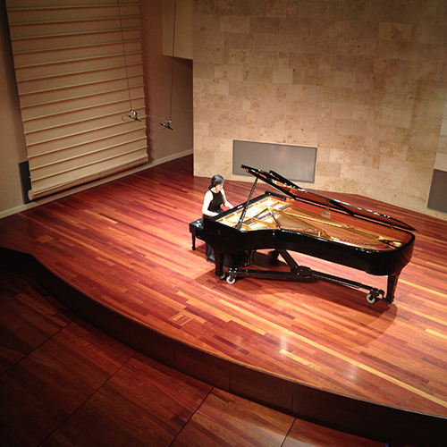

Pianist Elizabeth Yao graduated magna cum laude from the University of Washington with a Bachelor of Music degree in Piano Performance and a Bachelor of Arts in Chinese, having studied piano with Dr. Robin McCabe, Patricia Michaelian, and Nancy Jang. She went on to complete her Master of Music degree at the San Francisco Conservatory of Music under the teaching of Mack McCray. Elizabeth has performed as a guest soloist with the Coeur d’Alene Symphony as a winner of the Coeur d’Alene Symphony Young Artists Competition, and has also won prizes and honors in several other competitions, including the Lima Symphony Orchestra Young Artist Competition, the University of Washington Annual Concerto Competition, and the Ladies Musical Club Award Tour Competition. In 2017, she was a guest on Spokane Public Radio’s “From the Studio” program for a live performance and interview. Elizabeth also enjoys collaborating with other musicians, which have included performances as an orchestra pianist with the University of Washington Symphony Orchestra, and as a chamber musician with the Seattle modern music ensemble Inverted Space as well as with the San Francisco Symphony educational outreach program Adventures in Music. She is currently a doctoral candidate at Indiana University under the tutelage of André Watts.